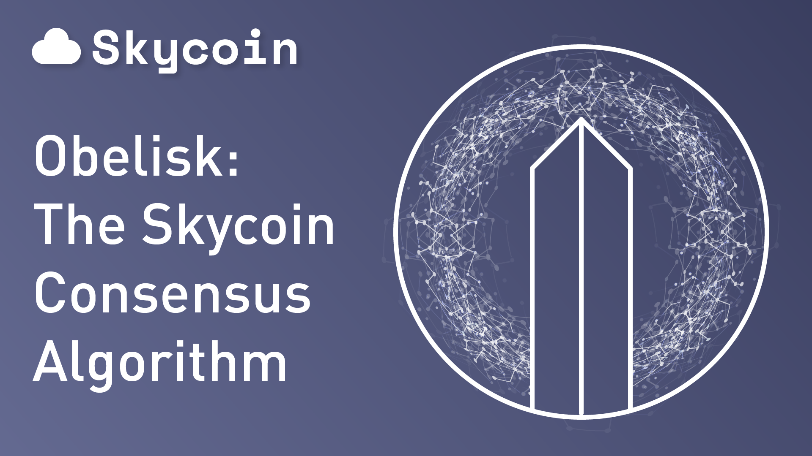

The Skycoin blockchain makes use of a novel type of consensus algorithm called “Obelisk” that replaces both Proof of Work (“PoW”) and Proof of Stake (“PoS”).
The aim of the developers of Skycoin was to correct the major security flaws and “centralizing tendencies” associated with blockchain networks in which consensus is based on PoW or PoS algorithms and coin creation is linked to a mining process. Skycoin is therefore trying to create a cryptocurrency that better fulfills Satoshi’s original vision of a fully decentralized digital currency system.
In doing so, Skycoin technology creates a blockchain network with no mining requirement, fixed supplies of crypto-tokens, 10-second transaction times, and greater security. In a system in which the connection between coin creation and control over the network is severed, crypto-tokens lose their political function and begin to act more like a form of digital property in the straightforward sense.
Proof of Work and the Bitcoin system
It was a fundamental miscalculation in the early programming of Bitcoin that the mining process would produce an economic incentive structure that would promote decentralization. In fact, the link between consensus and hashing power incentivizes the purchase of ever increasing processing capacity to control the consensus network.
The Bitcoin network, for instance, is de facto controlled by three for-profit mining pools which have been able to concentrate a large part of the network’s hashing power on its servers. These pools have begun to act as a cartel, splitting hashing power among each other by agreement. The link between mining and control of the network was already identified by Satoshi as the main non-cryptographic threat to the stability of the network. It allows actors who accumulate sufficient processing power and achieve a majority hash rate to falsify or revert transactions on the network in a 51% attack. Some argue that this vulnerability has become less pressing in an environment where hash power is highly centralized with actors who have invested large sums in the Bitcoin network and depend for their survival on the high value of the coin. Yet the power to influence the network is still highly concentrated, defeating the purpose of a distributed ledger-based cryptocurrency.
The Bitcoin network’s PoW algorithm thus introduces security and monopoly problems by placing power over the network with the actor capable of mobilizing enough economic resources to control the mining process.
This also implies that the operation of the network is both economically and environmentally inefficient. The continuous input of processing power required by the mining process uses up large amounts of electricity, incurring monthly costs in the tens of millions. These costs can only be offset with an exponentially growing influx of new capital along with new users. Only a very small number of well-established coins, like Bitcoin and Ethereum, will be able to attract enough users to achieve such a continual flow. In the case of most other PoW/PoS-based coins, the cost of PoW/PoS mining is paid for in a lower market valuation as money is bled out of a coin by mining costs until the coin is abandoned.
Right now the Bitcoin economy consists of new users putting their money in and then the money being thrown in a pit and burned in a sacrifice ritual to the mining electricity costs. If the average user had to pay the miners’ electricity cost directly as transaction fees, instead of it being robbed from them through inflation by the creation of new coins, then each Bitcoin transaction would cost more than $50. It would be more expensive than an international bank transfer.
The centralizing tendency of Proof of Stake
Although Proof of Stake algorithms tackle the security issue of 51% attacks, they are arguably even more vulnerable to centralization than PoW networks. In PoS, the size of network participants’ holdings of the cryptocurrency in the network determines their authority and voting power to implement technical changes in the network. Participants are able to mine an equivalent portion of their stake regardless of processing power.
This principle significantly increases the economic barriers to launching a 51% attack because the financial cost of acquiring the majority of tokens on the network in the open market is very likely to exceed the potential gain. If an attacker ends up as the majority stakeholder in the network, he will suffer most from the impact of the attack on the stability of the network or the external value of the cryptocurrency.
Yet, although raising the barriers to human-led attacks on the network, PoS creates a centralizing impulse which is as strong as, if not stronger than, in the case of PoW. As Joseph Young summarizes in his comparison of the two systems at coinfox.info, “A system where the major stakeholder enjoys extensive control and authority over both technical and economic aspects of the network creates a major monopoly problem.” While in PoW voting on the implementation of technical changes to the network “is divided among miners, developers and other crucial members of the community,” in a PoS system “major stakeholders have a technical ability to make any changes they like without considering the will of the community, businesses, miners and developers. This centralisation of voting power and, essentially, control of the network defeats the purpose of a distributed ledger-based cryptocurrency since it contradicts its entire principle of distributing all elements within the network to avoid the presence of a central authority.”
Obelisk: Skycoin’s distributed consensus algorithm
To tackle this centralization problem, Skycoin moves beyond PoW/PoS. It uses a distributed consensus algorithm, called Obelisk, which distributes influence over the network according to a “web of trust”. In essence, every node has a list of other nodes that it subscribes to, and the density of a node’s network of subscribers determines its influence on the network. Each node is assigned a personal blockchain which acts as a “public broadcasting channel” on which all of a node’s actions are visible and publicly recorded. As all consensus decisions and communication occur through the personal blockchains of each node, the community can very easily audit nodes for cheating or collusion. How decisions on the network are made and which nodes influence those decisions is completely transparent.
The public record left by each node’s personal blockchain allows the network to react to defections by severing connections with less trustworthy or malicious nodes, contracting the network to a smaller and denser core of trusted nodes. Hence, in principle, if the community does not trust the nodes representing them or feels that power within the network is too concentrated (or not concentrated enough) the community is able to collectively shift the balance of power in the network by collectively changing their trust relationships in the network. The accountability of nodes to the community and 3rd party audits as well as the transparency of consensus strengthens collective decision-making and thus introduces a highly democratic and decentralizing element to the network.
This system provides for a digital currency system with significantly reduced transaction times, no mining requirement, and greater security.
Read more: